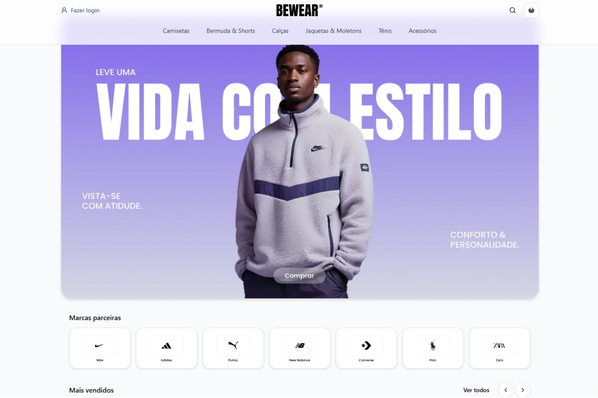
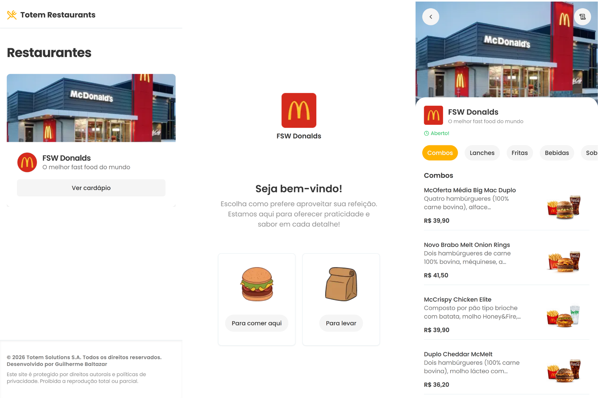
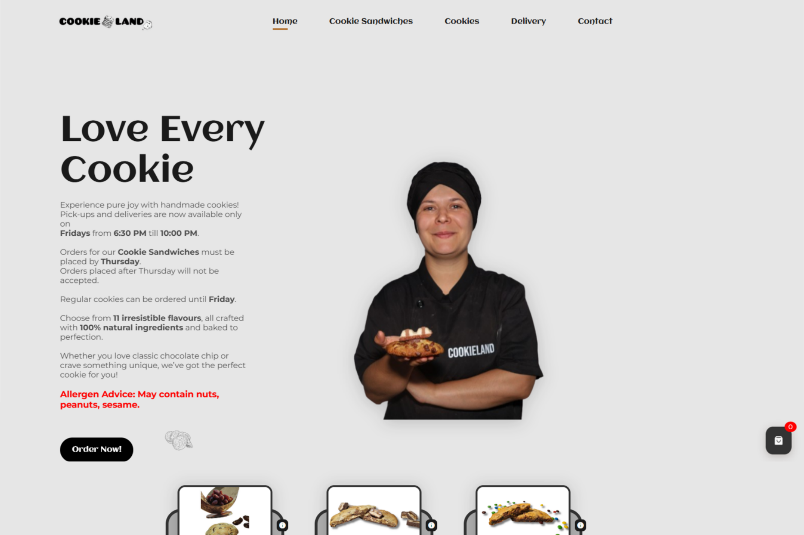
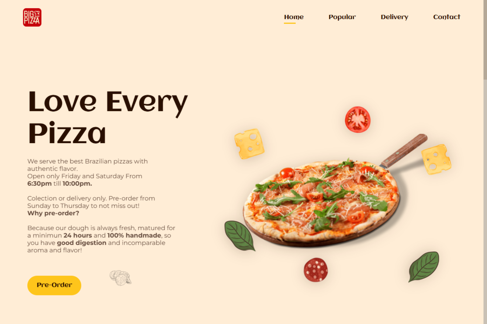
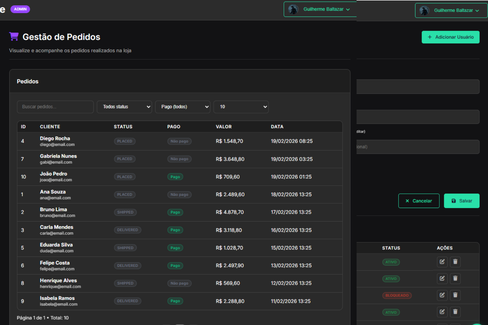
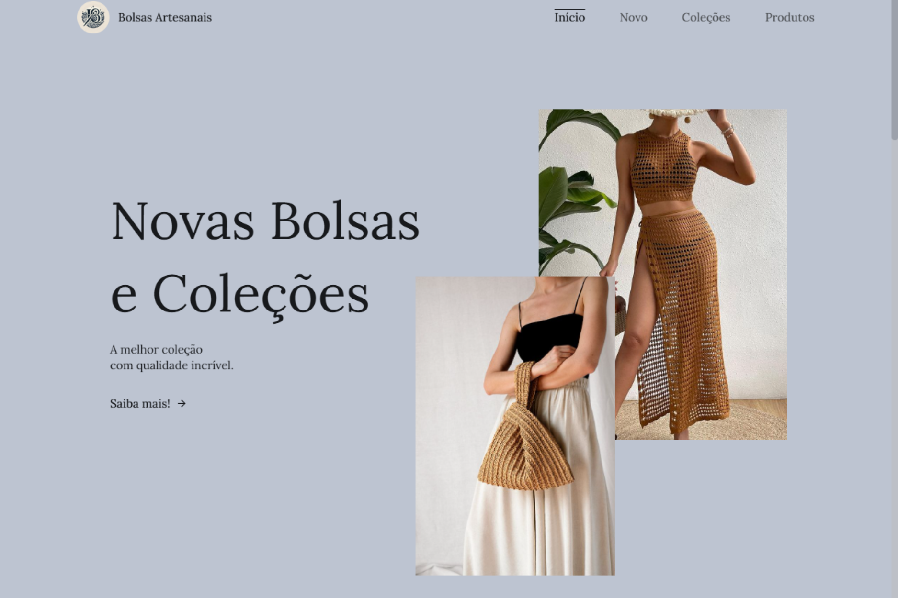
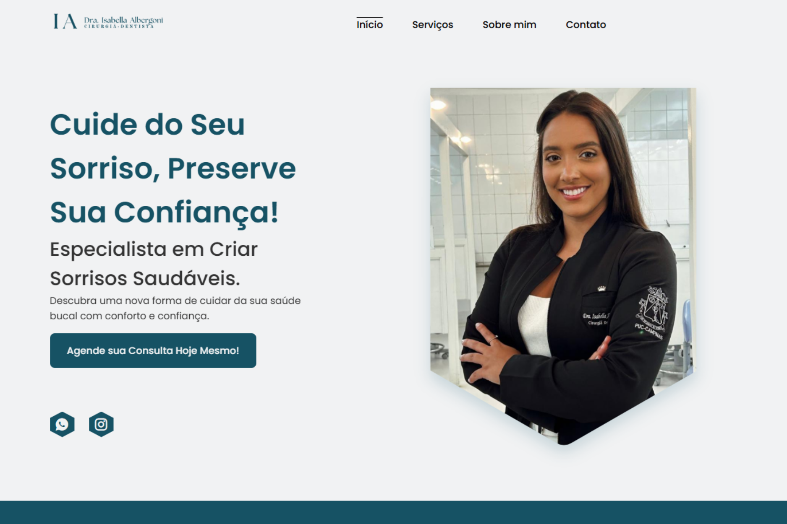
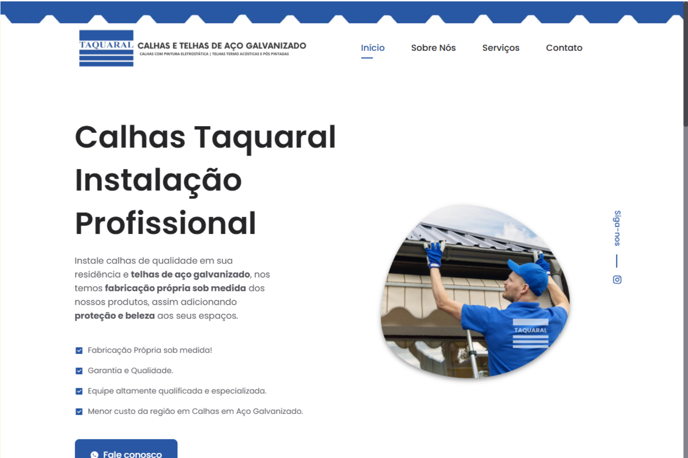
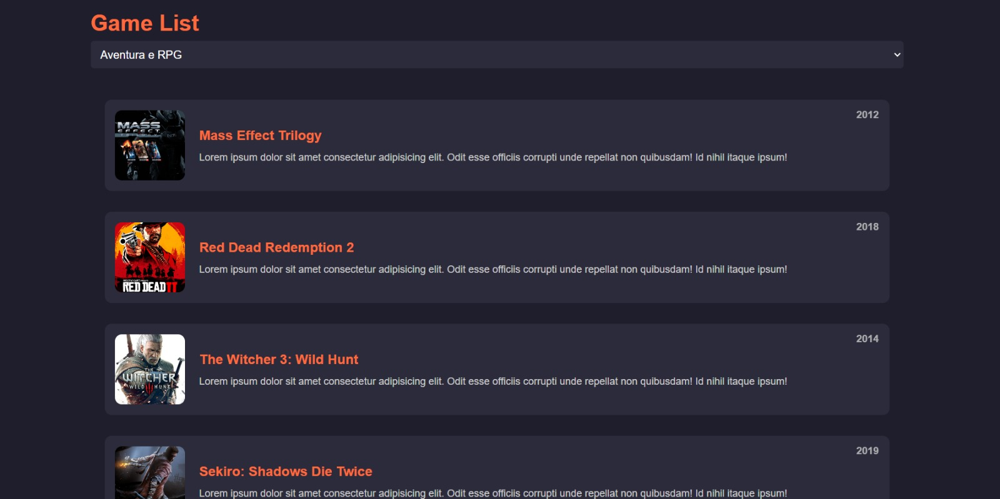
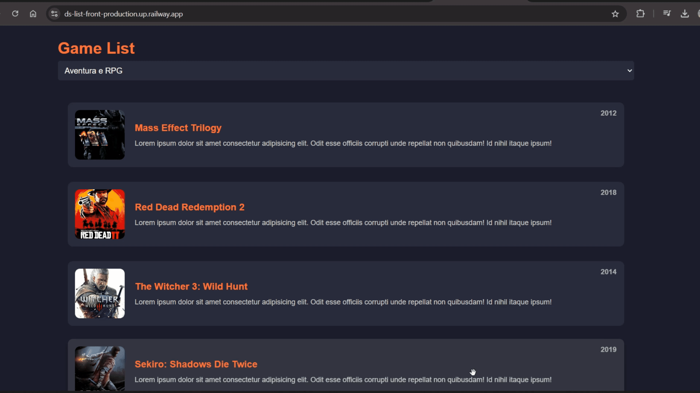

Bewear
Projeto de bootcamp focado em UI/UX moderno e componentes escaláveis.
Engenheiro de Software Pleno especializado em sistemas, processamento de dados em larga escala e arquiteturas modernas.
Sou Guilherme Baltazar, Bacharel em Ciência da Computação com mais de 7 anos de experiência construindo o backbone de sistemas críticos. Minha trajetória é marcada pela rápida evolução: pulei o cargo júnior devido ao alto desempenho técnico e hoje atuo como Desenvolvedor Pleno em uma multinacional.
Especialista em ecossistemas Java (Spring Batch, Oracle) e Node.js modernos (Prisma, Drizzle), gerencio atualmente o projeto CPP da Secretaria de Estado da Economia de Goiás, lidando com processamento massivo de dados e automação de alta complexidade.
Remoto · Multinacional
Responsável técnico pelo projeto CPP (Controle de Protesto por PAT) da Secretaria de Estado da Economia de Goiás. Atuação estratégica em automação de processos críticos e processamento de dados em larga escala.
Campinas, SP
Promoção após destaque técnico. Foco na modernização da infraestrutura de TI e evolução de sistemas internos críticos.
Formação Superior Completa
Base acadêmica sólida voltada para a resolução de problemas complexos e engenharia de alto nível. Durante o curso, já aplicava os conceitos teóricos em projetos reais de mercado.

Projeto de bootcamp focado em UI/UX moderno e componentes escaláveis.

Interface de autoatendimento inspirada no McDonald's desenvolvida durante bootcamp.


Site institucional e sistema de pedidos para a pizzaria do Tomas na Irlanda.

Arquitetura robusta de backend para vendas escaláveis com Spring.



Site institucional otimizado para o setor de construção civil.
Sistema de gerenciamento e agendamento de transmissões ao vivo.

Interface moderna e responsiva para listagem de games, integrada a uma API robusta.

API REST otimizada para ranking e categorização de games com persistência de dados.
Implementação de otimizações de alta performance para processamento batch em larga escala.
LinkedIn Post